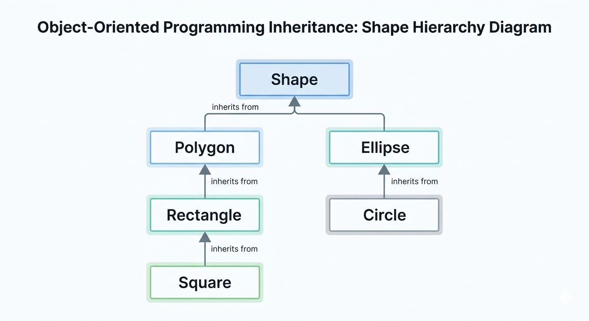

classDiagram
direction TD
%% Person is an abstract base class
class Person {
<<Abstract>>
-name: String
-birthday: Date
-ID: Integer
+knowRole() String
}
%% StaffMember inherits from Person
class StaffMember {
<<Abstract>>
+workOnRole()
}
Person <|-- StaffMember : inherits from
%% Specific Staff Roles
class Lecturer {
+teach()
+mark()
}
class TOMember {
+organizeTimeTable()
+processGrades()
}
class Demonstrator {
+assist()
+provideFB()
}
class SecurityGuard {
+assist()
+checkSafety()
}
StaffMember <|-- Lecturer : implements
StaffMember <|-- TOMember : implements
StaffMember <|-- Demonstrator : implements
StaffMember <|-- SecurityGuard : implements
%% Student inherits from Person
class Student {
<<Abstract>>
+workOnRole()
}
Person <|-- Student : inherits from
%% Specific Student Roles
class UGStudent {
+writeBScThesis()
}
class PGTStudent {
+writeMScThesis()
}
class PGRStudent {
+writePhDTHesis()
}
Student <|-- UGStudent : implements
Student <|-- PGTStudent : implements
Student <|-- PGRStudent : implements
%% Styling (Optional but helpful)
style Person fill:#f9f,stroke:#333,stroke-width:2px
style StaffMember fill:#bbf,stroke:#333
style Student fill:#bfb,stroke:#333
style Lecturer fill:#ddd,stroke:#333
style UGStudent fill:#ddd,stroke:#333
Inheritance
Khiem Nguyen
Lecturer in Multiscale Materials
khiem.nguyen@glasgow.ac.uk
Intro to inheritance
Intro to inheritance: Shapes
You want to build a software drawing various 2D Shapes: Rectangle, Square, Polygon, Circle, Ellipse, etc.
You can decide to build each class representing each particular shape. But you recognize “Wait a minute”:
- A
Squareis aRectangle - A
Rectangleis aPolygon - A
Circleis aELlipse - All of them is a
Shape
- A
Furthore, we notice
- A
Polygonhas a list ofPoint2D - A
Ellipsehas a center ofPoint2Dand has two two axis sizesaandbof typedouble. - A
Circleis similiar toEllipsebuta == b. - A
Rectanglehas a has a corner ofPoint2Dand two sizesaandbof typedouble - A
Squareis similar to aRectanglebuta == b.
- A
Intro to inheritance: Shapes
You notice that
- Drawing a square should be a consequence of drawing a rectangle with the same size.
- Drawing a rectangle should be a consequence of drawing a “special” polygon of 4 sides.
- Drawing a circle should be a consequence of drawing an ellipse
So why do we bother to build different classes separately!
Hierarchies
A hierarchy is a diagram showing how various objects are related.

Intro to inheritance: University People
If the above example cannot convince you enough, look at our University hierarchy.
A very small description about roles in our Uni
- Every member of staffs has a
name, abirthday, anID - Every student has a
name, abirthday, anID - There are different types of staff members:
Lecturer,TOMember,Demonstrator,SecurityGuard - There are different types of students:
UGStudent(undergraduate),PGTStudent(Post-graduate Taught) andPGRStudent(Post-graduate Research) - Every person in the Uni has their role and knows their role, work on their role.
➥ If you are about to create all the classes Lecturer, TOMember, Demonstrator, SecurityGuard, UGStudent, PGTStudent, PGRStudent, you see that you must [plug figure here] a lot for common data members and member functions.

This violates the principle designing rule: Do not repeat yourself
Intro to inheritance: How about the following design hierarchy
Basic inheritance in C++
Terminilogies
Terminilogy
✎ In an inheritance (is-a) relationship
- the class being inherited from: parent class, base class, or superclass
- the class doing the inheriting: child class, derived class, or subclass

Basic inheritance in C++: Mini example
➥ We will adopt a smaller design structure:
- Every
Lectureris a aUniPerson - Every
Studentis a aUniPerson - Every
LecturerandStudenthasnameandID.
We shall discuss - work_on_role() later when we study Polymorphism and Virtual Function. - other member functions in Lecturer and Student when we study [adding more functionality] to child class.
Basic inheritance in C++: Mini-diagram for code demonstration
classDiagram
direction LR
%% Person is an abstract base class
class UniPerson {
-name std::string
-ID int
-age int
+get_name() std::string
+get_ID() int
+get_age() int
}
%% class UniPerson
%% UniPerson : -name string
%% UniPerson : -ID int
%% UniPerson : -age int
%% Specific Staff Roles
class Lecturer {
- salary: double
+ get_salary() double
}
UniPerson <|-- Lecturer : inherits from
%% Student inherits from Person
class Student {
-tuition_fee: double
+get_tuition() double
}
UniPerson <|-- Student : inherits from
%% Styling (Optional but helpful)
%% style Person fill:#f9f,stroke:#333,stroke-width:2px
%% style Student fill:#bfb,stroke:#333
%% style Lecturer fill:#ddd,stroke:#333
Implementation of Inheritance: class UniPerson
➥ Let us look at the class UniPerson
UniPerson. Filename=uniperson.cpp
#include <string>
#include <string_view>
class UniPerson
{
private:
// This is shared by all Person objects
static int nextID;
std::string name{};
int ID {};
int age {};
public:
UniPerson(std::string_view name = "", int age = 0)
: name{ name }, age{ age }
{
// Assign the current counter and
// then increment it for the next object
ID = nextID++;
}
const std::string& get_name() const { return name; }
int get_age() const { return age; }
int get_id() const { return ID; }
};
int UniPerson::nextID{100000};Implementation of Inheritance: class Lecturer without inheritance
Lecturer without inheritance. Filename=lecturer_noinheritance.cpp
#include <string>
#include <string_view>
class Lecturer // non inheritance from UniPerson
{
static int nextID;
double salary;
std::string name;
int age;
int ID;
public:
Lecturer(std::string name, int age): name{name}, age {age}
{
// Assign the current counter and
// then increment it for the next object
ID = nextID++;
};
// we must copy + paste what we wrote for UniPerson
int age() { return age; }
const std::string& name() { return name; }
};
// you immediately see the problem here
// we just count the ID from all over again.
int Lecturer::nextID{10000}; ➥ Question Can you tell me what problem we have?
Implementation: class Lecturer inherited from class UniPerson
Lecturer inherited from class UniPerson. Filename=lecturer.h
#ifndef LECTURER_H
#define LECTURER_H
#include <string>
#include <string_view>
#include "uniperson.h"
class Lecturer : public UniPerson // non inheritance from UniPerson
{
private:
double salary;
// We can remove a lot of code here!!!
public:
Lecturer(std::string_view name = "", int age = 0, double salary = 42000):
UniPerson{name, age}, // we borrowed the constructor from UniPerson above
salary {salary}
{
};
double get_salary() const { return salary; }
// We can remove a lot of code for member functions here.
};
// We don't need this code anymore and it makes perfect sense.
// int Lecturer::nextID{10000};
#endifImpelemntation: Put two classes together into a main program
Lecturer derived from the class UniPerson Filename=main_uniperson_lecturer.cpp
#include <string>
#include <string_view>
#include <iostream>
class UniPerson
{
protected: // Protected so that Lecturer can see these
// This is shared by all Person objects
static int nextID;
std::string name{};
int ID {};
int age {};
public:
UniPerson(std::string_view name = "", int age = 0)
: name{ name }, age{ age }, ID {nextID++}
{
}
const std::string& get_name() const { return name; }
int get_age() const { return age; }
int get_id() const { return ID; }
};
int UniPerson::nextID{100000};
class Lecturer : public UniPerson // non inheritance from UniPerson
{
private:
double salary;
// We can remove a lot of code here!!!
public:
Lecturer(std::string_view name = "", int age = 0, double salary = 42000):
UniPerson{name, age}, salary {salary}
{
// we borrowed the constructor from UniPerson above
};
double get_salary() const { return salary; }
// We can remove a lot of code for member functions here.
};
// We don't need this code anymore and it makes perfect sense.
// int Lecturer::nextID{10000};
int main()
{
Lecturer khiem {"khiem", 42};
std::cout << "Khiem's age is " << khiem.get_age() << '\n';
std::cout << "Khiem's ID is " << khiem.get_id() << '\n';
Lecturer scott {"Scott", 101}; // his hair tells me that
std::cout << "Scott's age is " << scott.get_age() << '\n';
std::cout << "Scott's ID is " << scott.get_id() << '\n';
}➥ Notice that we can access age, id members although we did not define them explicitly in class Lecturer. Let us run the code.
Implementation: class Student
➥ It is now easy to write class Student derived from UniPerson
Student inherited from the class UniPerson Filename=student.h
#ifndef STUDENT_H
#define STUDENT_H
#include <string>
#include <string_view>
#include "uniperson.h"
class Student : public UniPerson // non inheritance from UniPerson
{
private:
double tuition;
// We can remove a lot of code here!!!
public:
Student(std::string_view name = "", int age = 0, double tuition = 42000):
UniPerson{name, age}, // we borrowed the constructor from UniPerson above
tuition {tuition}
{
};
double get_tuition() const { return tuition; }
// We can remove a lot of code for member functions here.
};
#endifImplementation: Put three classes together into a main program
Lecturer and Student derived from the class UniPerson Filename=main_uniperson_lecturer_student.cpp
#include <string>
#include <string_view>
#include <iostream>
class UniPerson
{
protected: // Protected so that Lecturer can see these
// This is shared by all Person objects
static int nextID;
std::string name{};
int ID {};
int age {};
public:
UniPerson(std::string_view name = "", int age = 0)
: name{ name }, age{ age }, ID {nextID++}
{
}
const std::string& get_name() const { return name; }
int get_age() const { return age; }
int get_id() const { return ID; }
};
int UniPerson::nextID{100000};
class Lecturer : public UniPerson // non inheritance from UniPerson
{
private:
double salary;
// We can remove a lot of code here!!!
public:
Lecturer(std::string_view name = "", int age = 0, double salary = 42000):
UniPerson{name, age}, salary {salary}
{
// we borrowed the constructor from UniPerson above
};
double get_salary() const { return salary; }
// We can remove a lot of code for member functions here.
};
class Student : public UniPerson // non inheritance from UniPerson
{
private:
double tuition;
// We can remove a lot of code here!!!
public:
Student(std::string_view name = "", int age = 0, double salary = 42000):
UniPerson{name, age}, tuition {tuition}
{
// we borrowed the constructor from UniPerson above
};
double get_tuition() const { return tuition; }
// We can remove a lot of code for member functions here.
};
// We don't need this code anymore and it makes perfect sense.
// int Lecturer::nextID{10000};
int main()
{
Lecturer khiem {"khiem", 42};
std::cout << "Khiem's ID is " << khiem.get_id() << '\n';
std::cout << "Khiem's salary is " << khiem.get_salary() << '\n';
Student peter_parker {"peter", 18}; // his hair tells me that
std::cout << "Peter's ID is " << peter_parker.get_id() << '\n';
std::cout << "Peter's tuition fee is " << peter_parker.get_tuition() << '\n';
}Inheritance chains
✎ We can comeback to our bigger diagram: UGStudent, PGTStudent and PGRStudent are all derived from class Student and thus we have [inherintance chain]{style:“color:red”}
classDiagram
%% Person is an abstract base class
class UniPerson {
}
class Lecturer {
}
class Student {
}
UniPerson <|-- Student : inherits from
class PGTStudent {
}
class UGStudent {
}
UniPerson <|-- Lecturer : inherits from
Student <|-- UGStudent: inherits from
Student <|-- PGTStudent: inherits from
Student <|-- PGRStudent: inherits from
%% Styling (Optional but helpful)
style UniPerson fill:#f9f,stroke:#333,stroke-width:2px
style Student fill:#bfb,stroke:#333
style Lecturer fill:#ddd,stroke:#333
➥ We will write a class for UGStudent.
➥ Instead of writing everything all the classes in one single giant filet, let us do this in multiple header files, which is the next topic.
Split the program into header files and implementation files
Goals of this example
✎ We go through the steps that need to be done to build a program that needs implementation of many classes.
- Write header files (
filename.horfilename.hpp) for each class - Write implementation files (
filename.cpp) for the corresponding class - Compile the main program using the
.cppfiles.
We build four classes and one main program. Each class is done by one header file .h and one implementation file .cpp:
- class
UniPerson - class
Lecturerinherits fromUniPerson - class
Studentinherits fromUniPerson - class
UGStudentinherits fromStudent
class UniPerson: Header file
UniPerson Filename=uni-program/uniperson.h
#ifndef UNIPERSON_H
#define UNIPERSON_H
#include <string>
#include <string_view>
class UniPerson
{
private:
// This is shared by all Person objects
static int nextID;
std::string name{};
int ID {};
int age {};
public:
// forward declare everything here
UniPerson(std::string_view name = "", int age = 0);
const std::string& get_name() const;
int get_age() const;
int get_id() const;
};
#endifclass UniPerson: Implementation file
UniPerson Filename=uni-program/uniperson.cpp
#include "uniperson.h"
int UniPerson::nextID{100000}; // Static initialization here only!
UniPerson::UniPerson(std::string_view n, int a)
: name{n}, age{a}, ID{nextID++}
{}
const std::string& UniPerson::get_name() const {
return name;
}
int UniPerson::get_age() const {
return age;
}
int UniPerson::get_id() const {
return ID;
}class Lecturer: Header file
Lecturer Filename=uni-program/lecturer.h
#ifndef LECTURER_H
#define LECTURER_H
#include <string>
#include <string_view>
#include "uniperson.h"
class Lecturer : public UniPerson // non inheritance from UniPerson
{
private:
double salary;
// We can remove a lot of code here!!!
public:
Lecturer(std::string_view name = "", int age = 0, double salary = 42000);
double get_salary() const;
};
#endif